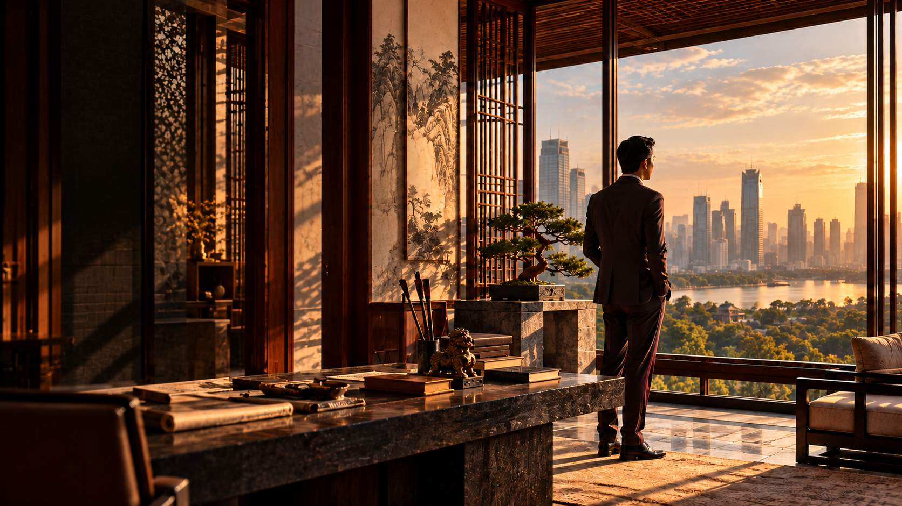
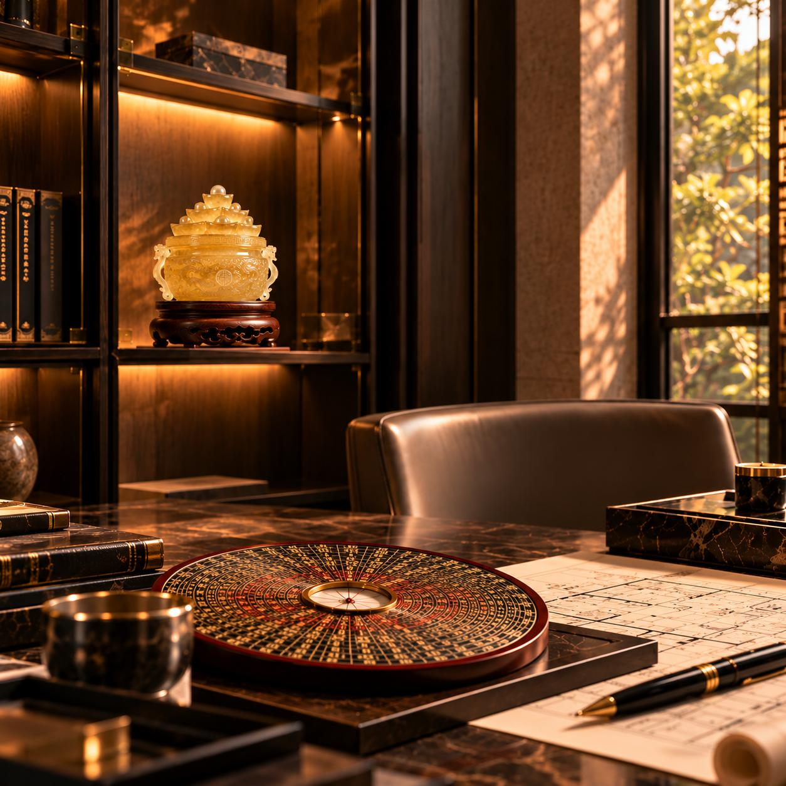
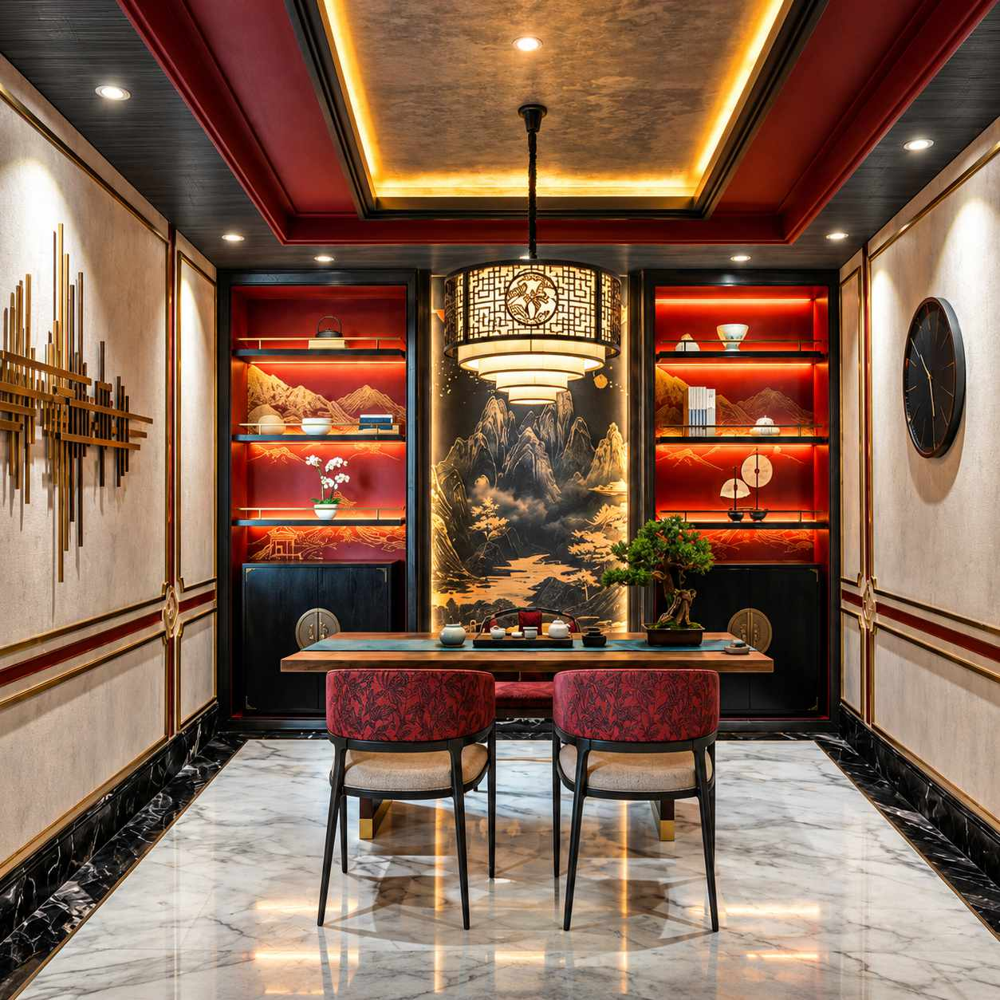

WORK WITH US
Through Imperial BaZi and Feng Shui, Anggara Treasures explores the relationship between personal potential, timing, and environment — bringing a considered perspective to life's most important decisions.
EXPLORE OUR APPROACH
THE PRINCIPLES
Like a finely calibrated mechanism, Feng Shui operates through two complementary engines.
The first is your BaZi, the principal engine, revealing the patterns that influence your Five Fortunes. The second is Feng Shui, bringing the energy of your surroundings into alignment.
Together, they work in harmony, complementing one another to cultivate greater balance in life.
OUR DISCIPLINES
An understanding of the main engine and the second engine, brought into thoughtful alignment.
01 — THE MAIN ENGINE
A deeper understanding of personal patterns, potential, and timing — so you can make clearer decisions and move with greater intention.
DISCOVER IMPERIAL BAZI02 — THE SECOND ENGINE
A considered approach to the spaces that shape how you live, work, and grow — through orientation, layout, materials, and the cycles of time.
DISCOVER IMPERIAL FENG SHUI
THE PRIVATE PRACTICE
Reserved for Those Who Seek a Deeper Understanding.
BEGIN WITH AN APPLICATION